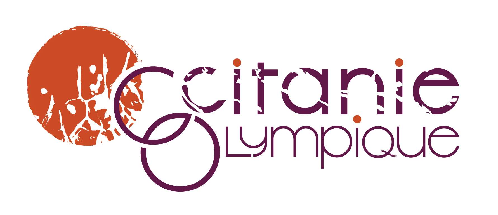
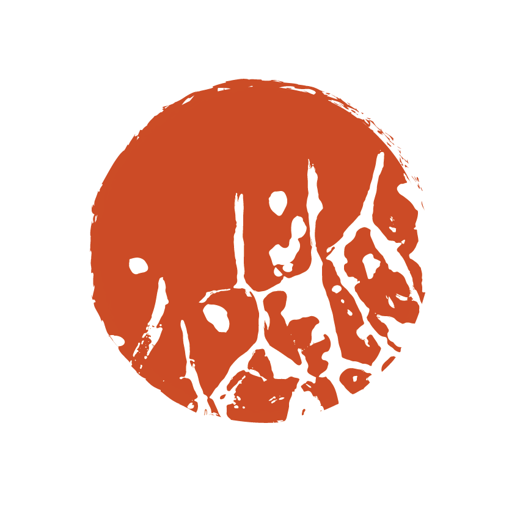
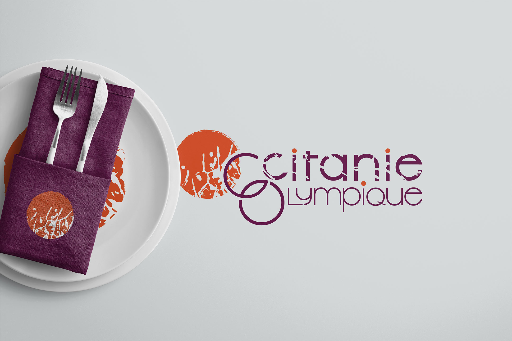

La terre et le terroir
Ce logo affirme un lien important avec la terre et le terroir, en tant qu’ils sont vecteurs
d’une forte identité régionale aussi bien que culinaire.

Nos couleurs souligent aussi une volonté de suggérer les valeurs du projet : un orange comme compromis entre terre, briques et piste d’athlétisme ainsi qu’un violet végétal et alimentaire inspiré du chou rouge.


C’est une empreinte de chou qui décore cette médaille orangée. Elle suggère un mouvement, un public, une équipe, en plus de symboliser des racines. La forme de boucle assemble cuisine, terroir et Jeux en évoquant les cercles Olympiques.


Projet réalisé avec Maurane Lupiac et Alexie Amart-Bouju